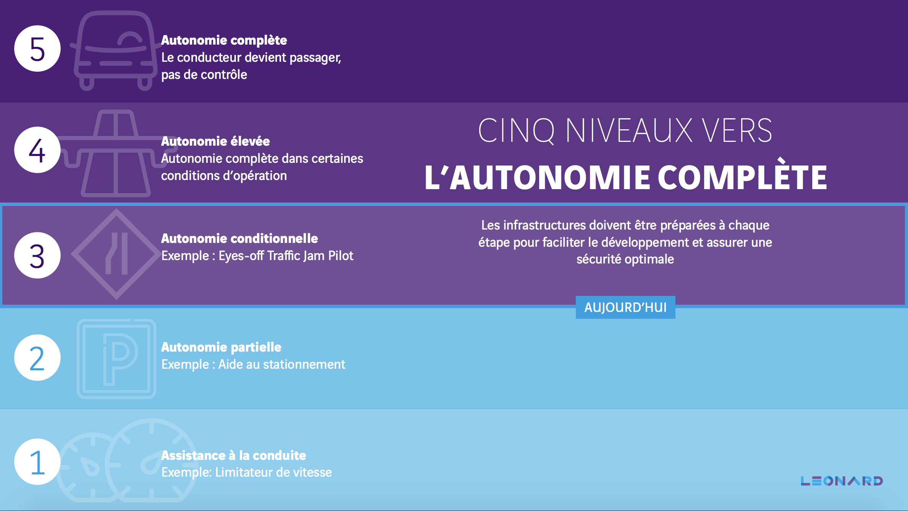

Les voitures autonomes : état des lieux en 2026
Les voitures autonomes font partie des promesses technologiques les plus médiatisées de ces dernières années. Pourtant, en 2026, une confusion majeure persiste dans l'opinion publique : la plupart des véhicules dits "intelligents" vendus au grand public ne sont pas réellement autonomes. Ils relèvent surtout du niveau 2, c'est-à-dire de l'assistance à la conduite, et non d'une véritable délégation de conduite, freiné par plusieurs problématiques.
I. Qu'est-ce qu'une voiture autonome ?
Définition
On parle de voiture autonome lorsqu'un système informatique prend en charge une partie ou la totalité de la conduite dans certaines conditions, grâce à des capteurs, des logiciels de perception et des fonctions de décision en temps réel. La référence mondiale pour classer ces systèmes est la norme SAE J3016, qui définit 6 niveaux allant de 0 (aucune automatisation) à 5 (autonomie totale). Plus on monte dans les niveaux, plus la responsabilité passe du conducteur vers le système.
Les 6 niveaux SAE
Le niveau 2 domine encore le marché grand public en 2026. Les niveaux 3 et 4 restent limités à des usages, des zones ou des conditions très encadrés.

Voiture autonome vs pilote automatique : une confusion fréquente
Le terme "pilote automatique" est souvent un argument marketing. Tesla Autopilot et FSD (Full Self-Driving) sont classés niveau 2 : le conducteur reste juridiquement et pratiquement responsable à tout moment. Beaucoup d'utilisateurs imaginent que leur voiture "se conduit toute seule", ce qui est précisément à l'origine de nombreux accidents et enquêtes réglementaires.
II. Quel est le fonctionnement et sa vulnérabilité ?
Les briques technologiques
- Capteurs : caméras, lidars, radars.
- Cartographie : cartes HD détaillées de l'environnement.
- Intelligence artificielle : algorithmes de perception, décision et contrôle.
- Calcul : traitement embarqué en temps réel et via le cloud.
Le domaine de fonctionnement (ODD)
Chaque système ne peut fonctionner que dans son ODD (Operational Design Domain) : un périmètre précis défini par le type de route, la météo, la vitesse, la visibilité et la zone géographique. Aucun système actuel ne fonctionne "partout, tout le temps".
Une surface d'attaque importante
Les technologies créent des vulnérabilités :
- Capteurs pouvant être trompés (signaux, lumières).
- Interfaces externes (Bluetooth, Wi-Fi, 4G, V2X) = points d'entrée.
- La chaîne cloud (mises à jour OTA) doit être sécurisée.
III. L'état du secteur en 2026
En 2026, le secteur avance, mais de manière très inégale. Il faut distinguer deux mondes : d'un côté pour le grand public on reste sur de l'assistance de niveau 2 (ADAS), et de l'autre pour les flottes professionnelles les véritables services sans conducteur se développent (robotaxis de niveau 4).
Le cas Tesla (Niveau 2)
Malgré les appellations "Autopilot" et "Full Self-Driving", les systèmes de Tesla restent classés niveau 2. En 2025-2026, une enquête de la NHTSA portait sur environ 2,88 millions de véhicules équipés de FSD avec 58 incidents documentés liés à des franchissements de feux rouges ou des erreurs de perception.
IV. Accidents, Incidents & Freins au déploiement
L'importance de la confiance publique
Les accidents restent un enjeu majeur. Le cas emblématique est l'affaire Cruise (2023) où un robotaxi a traîné une piétonne sur 6 mètres, aggravé par un manque de transparence de la direction face aux autorités, aboutissant à des millions de dollars d'amendes.
Waymo cumule pourtant le plus grand nombre d'incidents déclarés paradoxalement, mais c'est parce que sa flotte roule massivement en zone urbaine complexe. Les chiffres relatifs restent bien meilleurs que ceux des humains.
Les 3 grands freins actuels
- Freins techniques : Situtions rares, intempéries, et comportements imprévisibles non résolus. Surconfiance dangereuse des conducteurs en assistance (Niveau 2).
- Freins réglementaires : Exigences colossales de sécurité et de preuves avant homologation.
- Freins économiques : Les capteurs robustes et la supervision à distance coûtent très cher, inadaptables aux particuliers pour l'instant.
V. Cybersécurité : un enjeu invisible mais critique
La sécurité d'un véhicule autonome ne se joue pas uniquement "dans la voiture" mais aussi dans le cloud, les réseaux et les outils de déploiement. Les bonnes pratiques essentielles :
Conclusion
Les progrès sont réels : des cadres réglementaires plus clairs, des systèmes de niveau 3 et 4 déjà opérationnels dans certains contextes. Mais les incidents comme ceux de Tesla ou Cruise rappellent que la sécurité, la supervision humaine et la transparence restent les conditions indispensables de leur déploiement.
6 idées clés pour conclure rapidement
- Une voiture assistée n'est pas une voiture autonome.
- En 2026, le niveau 2 domine encore le marché grand public.
- Le niveau 3 existe vraiment, mais dans des conditions très limitées (ex : certaines autoroutes).
- Le niveau 4 progresse surtout via des robotaxis dans des zones précises.
- La technologie reste imparfaite et la transparence des entreprises est essentielle.
- Le vrai enjeu est de le faire de manière plus sûre que l'humain, de façon vérifiable.